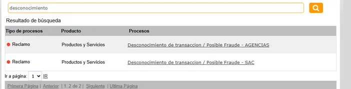
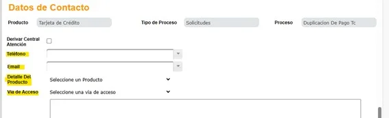
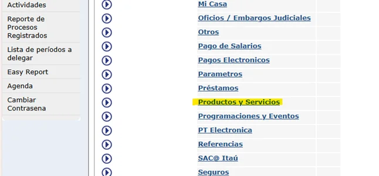
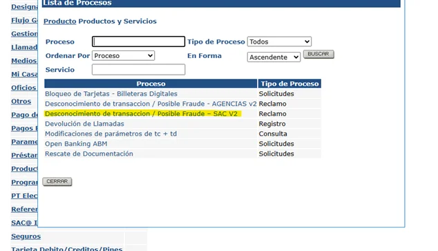
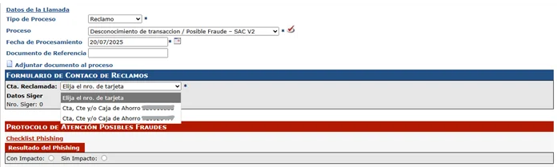
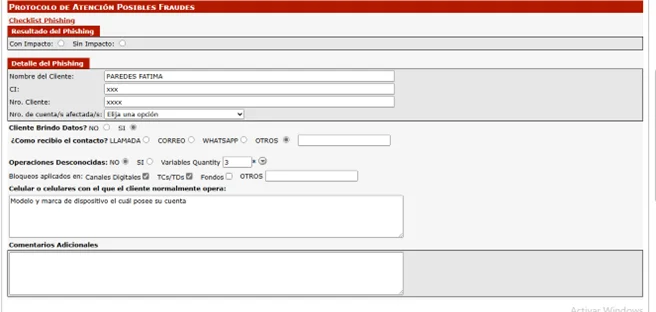
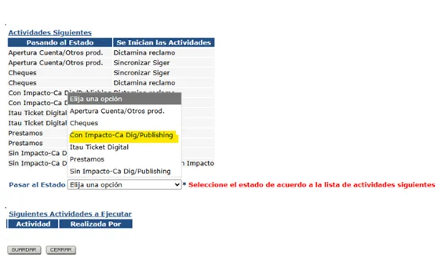

Proceso en BPM
1️⃣Haz clic en "Nuevo proceso" para iniciar una nueva solicitud.

1️⃣Desde la ficha del cliente, buscar desconocimiento y elegir la opción Sac.

2️⃣Clic en el proceso y, completar los campos con los datos del cliente y guardar.

3️⃣Luego ir a BPM para realizar los siguientes procesos.
1️⃣Haz clic en "Nuevo proceso" para iniciar una nueva solicitud.
2️⃣En el campo correspondiente, ingresa el número de cédula del cliente.
3️⃣Presiona "Buscar" o directamente Enter.

4️⃣Abajo visualizará la opción Productos y Servicios.

5️⃣Ingresar en la opción Desconocimiento de transacción / Posible Fraude – SAC V2.

6️⃣Para estirar el siger debe de ingresar en la opción Cta Reclamada y seleccionar la cuenta seleccionada anteriormente vía Sac.

7️⃣Para cargar el phishing se debe de ingresar si fue con impacto seleccionando las opciones y rellenando los campos requeridos.

8️⃣Elegir la opción para cargar phishing con impacto o sin impacto.

9️⃣ Si el phishing se realiza con impacto se debe de cargar contracargo por bpm.